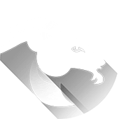

Скорпион
Декабрь 22 - Январь 20
Нельзя впадать в немедленные сомнения из-за того, что Вы можете увидеть. Принятие вызова может показаться пугающим, но только когда Вы отправитесь в путь, Вы увидите, сколько энергии у Вас есть, чтобы помочь мечте не только оторваться от земли, но и взлететь.